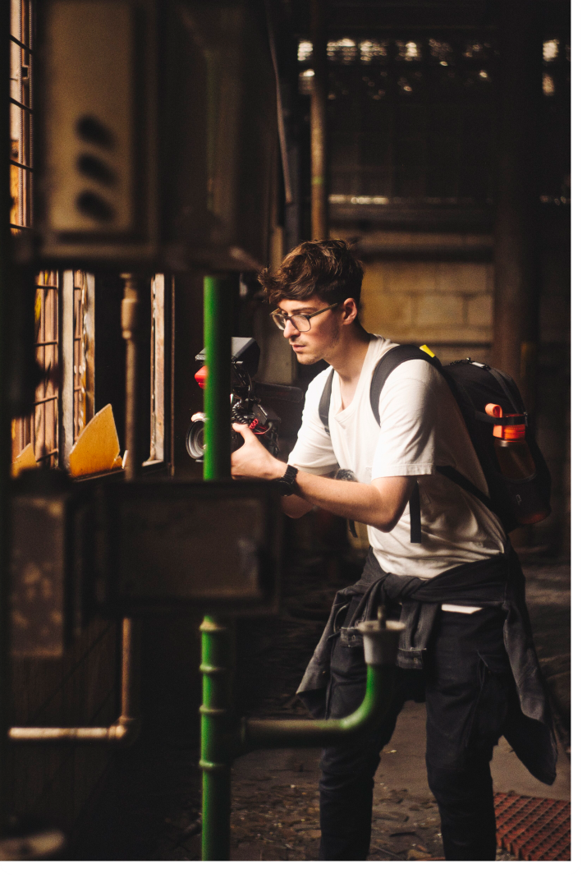

Portfolio
Geselecteerd Werk


Filmmaker • Camera Operator • Editor
Ik vang de momenten die je niet wilt vergeten. Van het eerste idee tot een beeld dat echt leeft.
Portfolio
Wat Ik Doe
Memorabele momenten vastgelegd in bewegend beeld. Van bedrijfsfilms en promotievideo's tot bruiloften en aftermovies, volledig op maat.
Nauwkeurige postproductie met vloeiende overgangen, kleurcorrectie en ritme dat het publiek geboeid houdt.
Professioneel camerawerk op locatie en in de studio. Van multicam livestreams tot filmsets als operator of camera assistent.
Dynamische animaties, titelsequenties en visuele effecten die jouw productie naar een hoger niveau tillen.
Audiomixing, foley en soundtrackselectie voor een meeslepende geluidservaring.
Cinematische kleurcorrectie en grading die sfeer en visuele identiteit bepalen.

Over Mij
Vroeger was ik al dat kind dat overal een camera op richtte; die fascinatie voor visuele verhalen zit er simpelweg diep in. Op de middelbare school bij Agora in Roermond kreeg ik de ruimte om zelf uit te vogelen waar mijn toekomst lag. Die zoektocht was goud waard. Daar ontdekte ik dat ik niets liever doe dan bijzondere momenten vastleggen en ze voor altijd bewaren. Wat begon als een hobby, is inmiddels mijn werk.
In 2020 besloot ik er vol voor te gaan en startte ik met de opleiding Audio Visueel Specialist aan het Vista College in Heerlen. Als ik niet op school ben, ben ik waarschijnlijk aan het editen in Premiere Pro of Photoshop. Ik vind het geweldig om content te maken voor mijn YouTube kanaal of live te gaan op Twitch. Het houdt me scherp en creatief.
Toch zit ik niet de hele dag achter een scherm. Ik heb de natuur nodig om op te laden. Als ik mijn mountainbike pak en de bossen in ga, vind ik de rust die nodig is om weer op nieuwe ideeën te komen. Even de modder in, de kop leeg, en dan met een frisse blik weer terug naar de montagetafel.
Neem Contact Op
Heb je een project in gedachten? Stuur me een bericht en laten we jouw visie tot leven brengen.